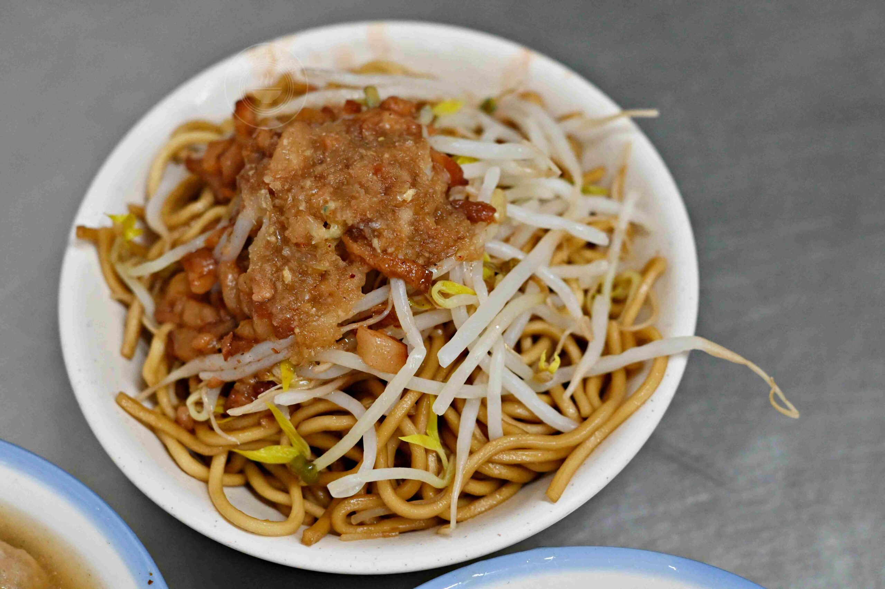

趙先生吃飯｜中和大胖肉焿光華總店：肉羹湯與炒麵

收藏重點
趙先生吃飯於2026-10-28發表食記，推薦豬肉裹薄魚漿的肉羹、蒜香蛋花羹湯，以及淋肉燥的炒麵和炒米粉；作者建議可各半混搭。味道、份量及人潮是作者經驗，非現況保證。
店家資訊與查核
2026-11-09 21:48 台灣時間查核；未致電店家。Google 地圖為獨立維護資料，不等於即時店家公告。
- 地址：新北市中和區光華街13號；地圖加列瓦磘里，門牌與原文一致。
- 電話：02-2248-0874，原文與地圖一致。
- 營業時間：原文記載 05:30–14:00；地圖當時顯示週二05:30開始營業，僅能核對開門時間，結束時間、其他日及公休日未獨立確認。店家網站連線發生 TLS 錯誤。請出發前致電確認營業及臨時公休。
- 交通：原文稱由永安市場站步行約15分鐘，未實測；勿混淆其他分店。
續湯說法與歷史價格
原文同時稱內用免費續湯兩次、也稱「喝到飽」；菜單段落稱菜單註明免費加湯兩次，但作者觀察店員有時主動續超過兩次，另述自己加兩三次。這些是作者對標示與當時實際體驗的不同描述，不能據此保證無限續湯；請依店內現行規定詢問。
以下為2026-10-28原文記載的價格，非現價保證：肉羹湯55元；炒麵或炒米粉小份25元、正常35元、內用加大55元；滷蛋15元、豆芽菜35元。實際價格及供應以店家為準。
圖片與來源
兩張餐點原照取自趙先生吃飯原文，已逐圖檢視，未見人物、車牌或其他明顯敏感資訊，保留原浮水印。原站頁尾標示 All Rights Reserved；公開再利用授權尚未確認，署名不等於取得授權。